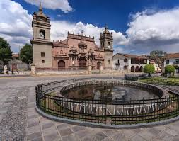
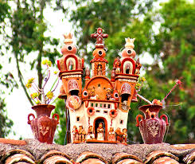

A pesar de que se le conoce como la "ciudad de las 33 iglesias", en realidad cuenta con más de 33 templos y capillas coloniales, sumando incluso más si se incluyen las construcciones modernas.

El puca picante, un plato típico de la región, tiene un origen rural y se consumía principalmente en trabajos comunitarios del campo. La palabra "puca" significa "rojo" en quechua, y originalmente el color rojo se obtenía del fruto del ayrampo, aunque hoy en día se utiliza betarraga y ají panca.

La artesanía de Huamanga es que la "Piedra de Huamanga", utilizada para tallar figuras, es en realidad un tipo de alabastro de color blanco con una textura suave y un brillo único, lo que la hace muy agradable al tacto y especial para las esculturas.